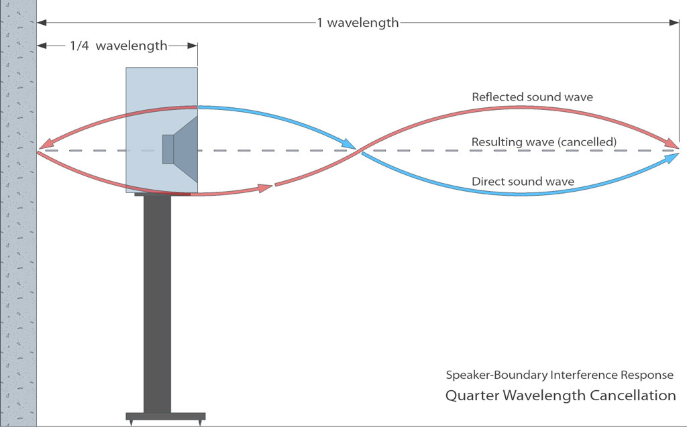

HiFi Audio Design
The Wall Behind The Loudspeaker

|
A critical factor in the bass response of a speaker in a room is the distance of nearby walls (or boundaries) from the speaker. The wall behind the speaker reflects the omnidirectional low frequency sound energy back towards the listening position.  When the total distance travelled by this reflected sound is half a wavelength it destructively interferes with the direct sound causing a notch to appear in the bass region of the sapeaker. This notch will be typically about 2/3rd octave wide and cause a significant decrease of the total bass energy in the room. You must check that the speaker is not at a distance from the wall behind it that will cause this cancellation notch to appear in the frequency range that the speaker can reproduce. For example, if a speaker is placed so that the front of it is 86cm from the wall behind it the cancellation frequency will be approximately 100Hz.  |
There are two different ways to solve this problem. It will depend on
the room
as to which one is most suitable and can be used:
|
Reflections of other boundariesOther sources of bass cancellation are from reflections off the floor, ceiling, side walls and rear wall. The cancellation is still based on half wavelength cancellation of the path difference but, as the sound does not travel back on itself, a slightly different formula is required. In fact this is the general equation for cancellation frequencies and can also be use for desk reflections that occur in the mid frequency range. |
Calculate First (early) Reflections |
|
SolutionThere are some differentways to solve these reflection problems
|
Source: http://www.genelec.com
<<< Back
©
mh-Audio.nl - Disclaimer